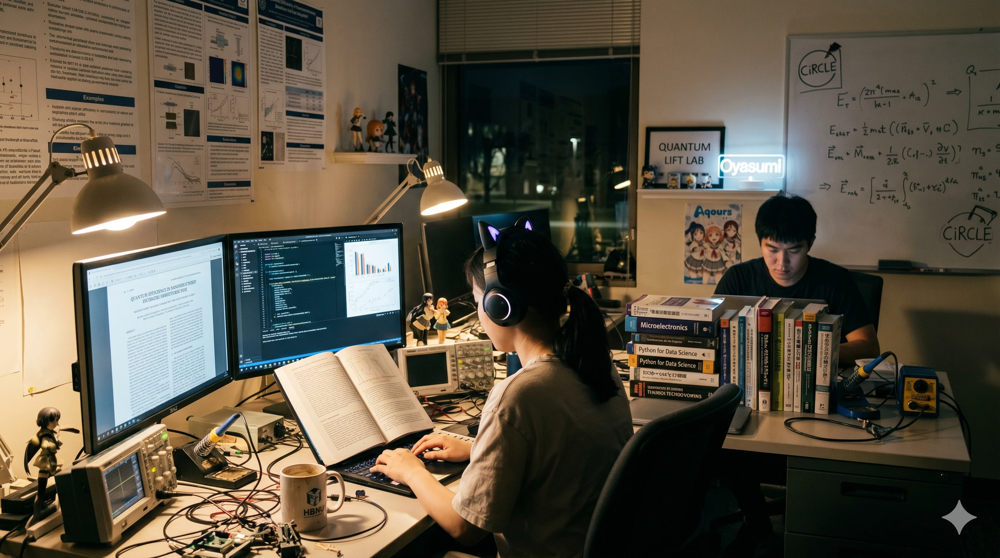

1. 개요
"학부생이 학교의 손님이라면, 대학원생은 학교를 돌리는 톱니바퀴다."
"교수님, 살려주세요... 아니, 논문 통과시켜 주세요..."
효빈대학교의 학문적 심장부이자, 학부에 존재하는 207개 전 학과의 심화 과정을 담당하는 곳. 거점국립대 최고 수준의 연구비를 지원받으며, 효빈시의 전폭적인 지지 아래 수많은 연구 인력이 갈려 나가는(?) 성스러운 지식의 전당이다.
학부생들이 축제와 동아리로 청춘을 만끽할 때, 이들은 교수회관 식당에서 교수님의 뒤를 따라 영혼 없는 표정으로 아고라 다이닝의 진갈비탕을 씹어 넘긴다. 캠퍼스 내 모든 건물에 밤 11시 이후 켜져 있는 불빛은 99.9% 확률로 대학원생의 생명력이라고 보면 된다.

새벽 3시의 랩실. 몬스터 에너지 드링크 캔이 탑을 쌓고 있다.
2. 인문·어문계열
석사는 고사하고 박사 학위까지 따도 취업을 보장받기 어렵다는 '문사철'의 극한 생존 구역. 하지만 학문에 대한 순수한 광기만큼은 공대생들을 가볍게 압도한다. 박효빈 시장의 든든한 학문적 백업을 받는 학과들이 포진해 있다.
어문학부
- 필리핀어학과 박효빈 시장의 특별 지원을 받는 명실상부 효빈대 최고의 성골 랩실. 효빈시-필리핀 교류사로 논문을 쓰면 프리패스라는 카더라가 돌 정도로 예산이 빵빵하다.
- 노어노문학과 슬라브 문학의 혼을 연구한다. 겨울에 난방비 아끼겠다며 보드카 한 잔 걸치고 톨스토이를 읽는 대학원생이 출몰한다는 괴담이 있다.
- 독어독문학과 칸트와 실러에 미친 자들. 독일 철학 원서를 밤새 번역하다가 머리가 다 빠져버린 박사과정 선배들이 수두룩하다.
- 불어불문학과 "예술은 죽지 않는다." 와인과 샹송을 브금으로 틀어놓고 우아하게 논문을 쓴다.
하지만 마감일엔 바게트로 모니터를 치고 싶어 한다.
- 서어서문학과 중남미의 정열을 논문으로 승화시키는 곳. 스페인어 원서와 싸우다 지치면 플라멩코 음악을 틀어놓고 랩실에서 춤을 춘다는 목격담이 있다.
- 국어국문학과 방언학, 고전문학, 현대문학 등 랩실 파벌이 명확하다. 맞춤법 하나 틀리면 교수님한테 논문이 갈기갈기 찢긴다.
- 언어학과 인문대생의 탈을 쓴 이과생들. 자연어 처리(NLP)를 연구하느라 컴공 랩실에 기생해서 코딩을 짜고 있는 짠한 모습을 볼 수 있다.
- 영어영문학과 번역의 노예들. 영시의 은유적 의미를 파악하려 밤을 새우다 결국 파파고와 DeepL을 찬양하게 되는 과정을 겪는다.
- 중어중문학과 중국 고대 문학과 현대 사회학을 넘나든다. 매일 엄청난 양의 한자와 싸우며, 랩실 간식은 무조건 마라탕과 탕후루로 통일된다.
- 한문학과 효빈시 향토 사료 번역의 최전선. 초서체로 갈겨쓴 옛날 편지를 해독하느라 시력이 나빠져 두꺼운 돋보기 안경을 장착하게 된다.
인문학부
- 철학과 이데아를 좇는 현대의 소크라테스들. 윤재훈 사건 당시 악의 평범성에 대한 100페이지짜리 분석 논문이 일주일 만에 쏟아져 나온 무서운 곳이다.
- 고고학과 연구실보다 발굴 현장에서 구르는 시간이 더 길다. 효빈시 재개발 공사장에서 토기 파편 하나라도 나오면 붓과 솔을 들고 즉시 출동하는 흙먼지의 전사들.
- 문화재보존학과 깨진 도자기와 부식된 금속을 되살리는 신의 손들. 핀셋으로 유물의 떼를 벗기다 본인의 명줄도 같이 깎이는 기분을 느낀다.
- 문화콘텐츠학과 사실상 '오타쿠 석박사' 양성소. 애니메이션 연출 기법으로 SCI급 논문을 쓰려다 지도교수님과 멱살잡이를 하는 애증의 공간이다.
- 미술사학과 전 세계 박물관 도록을 씹어먹는 사람들. 아는 건 엄청 많은데 정작 본인 방은 캔버스와 서류더미로 쓰레기장이라는 모순을 안고 산다.
- 사학과 논문 쓰다 막히면 훌쩍 답사를 떠나버린다. 조선시대 당파 싸움을 논하다가 랩실 동기들과 진짜 파벌이 갈려 싸우는 웃픈 상황이 연출된다.
- 문화인류학과 코믹월드와 효빈 애니메이션 페스티벌(HAF) 현장에 직접 코스프레를 하고 잠입하여 '오타쿠 하위문화의 참여 관찰 연구'를 쓰는 진정한 학자들.
- 종교학과 모든 신을 객관적으로 분석하다 보니 해탈의 경지에 이른다. 랩실 회식 때 템플스테이와 피정 이야기를 안주로 삼는다.
- 문예창작과 밤샘 글쓰기의 장인들. 학위 논문 심사 날 창작 소설 합평회에 가까운 교수님들의 살벌한 피드백 폭격을 견뎌야 한다.
- 음악학과 (인문대 소속) 음악의 역사와 이론을 깊게 파고든다. 악보를 수학 공식처럼 분석하며, 음대생들 앞에서도 꿀리지 않는 평론 포스를 뿜어낸다.
3. 사회·상경계열
효빈시의 싱크탱크이자 사회복지학대학이라는 최고의 진골 라인을 보유한 권력의 중심지.
사회복지학 대학원 (S등급)
- 사회복지정책학과 박효빈 시장의 직속 후배 랩실. 지자체 복지 예산안의 초안이 사실상 여기서 잡힌다는 소문이 돌 정도로 지역 사회에 미치는 영향력이 어마어마하다.
- 사회복지경영학과 NGO와 복지 재단의 CEO를 기르는 곳. 민부선 현 총장의 지도 학생들은 엑셀표와 애니메이션 사례를 융합한 경영 전략 논문을 쓰느라 밤을 새운다.
- 사회복지실천학과 책상머리 학문이 아닌 현장 최전선의 임상 데이터를 다룬다. 랩실에 구급상자와 파스가 상비되어 있다.
- 사회복지상담학과 정신 분석과 심리 상담의 마스터들. 타 단과대 대학원생들이 논문 스트레스로 울면서 찾아오면 무료로 상담해주며 데이터를 수집한다.
사회과학부
- 경찰행정학과 논문 심사 때 교수님을 향해 "수갑 채워버리고 싶다"는 충동을 억누르며 범죄 심리를 연구한다. 체력 단련과 논문 작성을 병행하는 진정한 문무겸비.
- 문헌정보학과 정보 검색의 신. 빅데이터 시대에 발맞춰 도서관 전산망을 뒤집어엎는 아키텍처를 연구하며 중앙도서관 지하에 서식한다.
- 미디어커뮤니케이션학과 뉴미디어와 레거시 미디어의 알고리즘을 캔다. 유튜브 떡상 알고리즘을 논문으로 증명하려다 본인 유튜브가 망하는 경우가 빈번하다.
- 국제학부 영어로만 진행되는 살벌한 랩 미팅. 외국인 유학생과 한국인 조교가 파파고 없이 멱살 잡고 토론하는 진정한 글로벌 구역이다.
- 군사학과 "논문! 심사! 통과!" 군사 안보와 국방 정책을 연구한다. 랩실에서도 각 잡힌 자세로 타이핑을 치며 간부를 준비하는 소령/중령급 만학도들이 많다.
- 사회학과 세상의 부조리를 파헤치다 본인 랩실의 부조리(열정페이)를 가장 먼저 깨닫고 현타에 빠지는 똑똑하고도 슬픈 학자들.
- 심리학과 뇌파 측정기(EEG)를 머리에 뒤집어쓰고 "인간은 왜 이따구로 행동하는가"를 연구한다. 윤재훈의 빵 테러 동기 분석 논문이 인기 주제였다.
- 지리학과 GIS(지리정보시스템) 프로그램 돌리다가 그래픽 카드가 터져나가는 곳. 지형도 하나를 그리기 위해 산속에서 모기를 뜯기며 측량한다.
- 정책학과 효빈시청을 쥐락펴락할 정책을 구상한다. 시의원 보좌관이나 공기업 핵심 부서로 빠지기 위해 랩실을 정치판처럼 이용하는 무서운 곳.
- 공공학과 공기업과 공단 생태계를 해부한다. LH, 한전 등의 평가 보고서를 쓰느라 매일 엑셀 함수와 전쟁을 벌인다.
- 행정학과 관료제의 폐해를 연구하며 본인들도 철저한 랩실 관료제(교수-포닥-박사-석사)에 편입되어 살아가는 딜레마의 공간.
상과대학 (자본주의 랩실)
- 부동산학과 논문 쓰다가 "이 동네 땅값이 떡상할 것"이라는 인사이트를 얻어 랩실 동기들끼리 영끌 투자를 기획한다는 전설이 있다.
- 경영학과 마케팅, 인사, 재무 등 파벌이 나뉘어 있다. 매일 스타트업 CEO처럼 정장을 입고 랩미팅에 임하지만 지갑엔 컵라면 살 돈밖에 없다.
- 금융보험학과 파생상품과 리스크 헤징을 수학적으로 증명한다. 여의도 진출을 꿈꾸며 2호선 막차에서 블룸버그 터미널을 읽다 기절한다.
- 무역학과 글로벌 공급망 마비 사태가 터지면 논문 주제가 엎어져서 오열하는 대학원생들을 볼 수 있다.
- 세무학과 합법적인 탈세(...) 아니, 절세의 극한을 연구한다. 연말정산 시즌엔 주변 랩실 동료들의 컨설턴트로 강제 차출당한다.
- 회계학과 숫자가 1원이라도 안 맞으면 집에 못 가는 저주에 걸려 있다. 회계감사 시즌엔 회계법인 알바로 불려 나가 영혼까지 털린다.
- 경제학과 "가정: 모든 인간은 합리적이다"라는 문장으로 시작하지만, 정작 본인이 대학원에 진학한 것은 비합리적이었음을 깨닫고 눈물을 훔친다.
- 광고홍보학과 칸 라이언즈 수상작을 100번씩 돌려보며 캠페인을 기획한다. 랩실에 항상 최신 트렌드 맥주와 피자가 널려 있는 힙한 구역.
4. 이학·생명·해양계열
자연의 섭리를 캔다는 명목하에 본인들의 건강을 제물로 바치는 연금술사들의 모임.
농업생명과학부
- 식물의학과 캠퍼스 나무가 시들면 한밤중에 영양제를 꽂아주고 사라지는 은밀한 나무 의사들. 논문 데이터가 바람 한 번에 다 날아가서 오열하는 일이 잦다.
- 산림과학과 연구실보다 학교 뒷산과 지리산에서 텐트 치고 자는 날이 더 많다. 멧돼지와 마주쳤을 때 대처법을 논문보다 먼저 배운다.
- 수산생명의학과 수조 온도 맞추느라 잠을 못 잔다. 애지중지 키우던 실험용 광어가 집단 폐사하면 그날 랩실은 장례식장이자 횟집(?)이 된다.
- 수산자원학과 치어 방류 사업과 해양 양식 기술을 연구한다. 가끔 배 타고 나가서 그물 끌어올리다 근육몬이 되어 돌아온다.
- 식물자원학과 스마트팜 온도/습도 조절 센서가 고장 나면 새벽 3시라도 택시 타고 이자캠퍼스로 달려와야 하는 극한 직업.
- 원예학과 세상에서 가장 아름다운 꽃을 피우기 위해 세상에서 가장 찌든 얼굴로 퇴비와 비료를 섞고 있다.
- 애완동물과 강아지와 고양이의 행동 심리 및 유전병을 연구한다. 랩실에 항상 개껌과 츄르가 굴러다니며 고양이 털이 과잠을 지배한다.
- 동물과학과 육종학의 끝판왕. 실험용 소와 돼지들의 족보를 본인 가문 족보보다 더 잘 외운다.
- 축산학과 치즈와 요구르트 발효 시간을 놓치면 논문 한 챕터가 통째로 날아간다. 부속 목장의 실질적 관리인들이다.
- 생명공학과 "교수님, 세포가 또 오염(컨태미네이션)됐어요." 1년 내내 마이크로피펫을 누르다 엄지손가락 관절염에 걸리는 유전자 가위의 노예들.
- 생명과학과 쥐(Mouse)와 초파리, 예쁜꼬마선충을 신처럼 모시며 교배시킨다. 쥐가 탈출하는 날엔 비상 사이렌이 울리며 전원이 포획 작전에 투입된다.
생활·자연과학부
- 조리과학과 푸드테크와 분자 요리를 연구한다. 수비드 머신과 액화질소가 랩실에 굴러다니며, 가끔 실험 실패작을 동기들에게 먹이는 악행을 저지른다.
- 제과제빵과 효모의 배양 조건을 최적화하기 위해 밀가루를 톤 단위로 반죽한다. 랩실 문을 열면 빵 냄새가 나지만, 대학원생 얼굴은 식빵처럼 하얗게 질려있다.
- 소비자학과 빅데이터 크롤링을 통해 MZ세대의 지갑이 어디로 열리는지 감시한다. 논문비로 최신 제품 샀다가 영수증 처리 반려당해 슬퍼한다.
- 식품영양학과 식품첨가물과 영양 성분을 분석하는 랩. 학식 메뉴 성분을 털어서 조리실 이모님들과 학술적 마찰을 빚기도 한다.
- 의류의상학과 스마트 섬유와 웨어러블 디바이스를 의류에 접목한다. 랩실에 미싱기와 인두기, 납땜기가 혼재하는 기괴한 풍경.
- 주거환경학과 스마트 홈 시스템 연구를 위해 본인 랩실을 IoT의 마루타로 사용한다. "헤이 구글, 논문 좀 써줘"가 일상어.
- 아동가족학과 보육 정책과 아동 심리를 파고든다. 어린이집 관찰 실습 나갔다가 아이들의 기력에 빨려 너덜너덜해져 돌아온다.
- 물리학과 "모든 것은 수식으로 증명 가능하다"고 믿으며 양자역학과 입자물리를 판다. 칠판의 외계어를 해독하다 본인이 외계인이 되어가는 랩실.
- 대기과학과 슈퍼컴퓨터로 기후 모델링을 돌리다 뻗으면 그날 하루는 그냥 공치는 날. 비 오는 날 하늘 보며 원망 섞인 한숨을 쉰다.
- 수학과 종이, 펜, 쓰레기통, 커피. 이 네 가지만 있으면 세계 최고 난제의 증명(과 폐기)이 무한 반복되는 고독한 천재들의 수용소.
- 천문학과 낮과 밤이 완벽히 뒤바뀐 뱀파이어 랩실. 키라키라 천문관측소에서 별 사진 하나 건지겠다고 한겨울에 패딩 두 개 겹쳐 입고 버틴다.
- 통계학과 쏟아지는 데이터를 정제(클렌징)하다가 정신이 붕괴된다. "p-value가 0.05를 넘었어요 교수님!"이라는 비명이 자주 들린다.
- 지질학과 암석 단층을 분석하며 지구의 나이를 캔다. 랩실엔 항상 정체 모를 흙가루와 돌덩이들이 굴러다녀 청소부 여사님들의 기피 구역 1호다.
- 화학과 유기/무기 합성의 대가들. 위험한 시약을 밥 먹듯이 다루기에 랩실 후드(환기구) 소음이 백색소음처럼 익숙하다.
해양·환경학부
- 항해학과 해양 시뮬레이터를 돌리며 항로 최적화를 논문으로 쓴다. 가끔 승선 실습으로 6개월간 연락 두절되는 선배들이 있다.
- 해양공학과 파력 발전과 방파제 구조물을 설계한다. 파도 치는 수조 실험장이 랩실 옆에 있어 항상 짭짤한 짠내가 난다.
- 조선해양공학과 거대 선박의 유체역학 저항을 줄이려 컴퓨터 모델링을 며칠씩 돌린다. 설계도 하나 출력하면 플로터가 윙윙거린다.
- 해양학과 적조 현상과 심해 생태계를 연구. 강주캠퍼스 앞바다에서 플랑크톤 채집해오다 물에 빠지는 해프닝이 흔하다.
- 조경학과 도면 렌더링에 영혼을 갈아 넣는다. 완벽한 생태 공원을 디자인해놓고 정작 본인 랩실엔 햇빛조차 안 들어온다.
- 환경공학과 하수 처리와 미세먼지 저감 기술을 연구. 악취 나는 샘플을 다루느라 후각이 마비된 대학원생들이 많다.
5. 의학·보건계열 (메디컬 타운)
'통합 의과대학'이라는 실험의 최전선. 생명을 다루기에 군대 뺨치는 똥군기와 극강의 로딩을 견뎌내야 하는 메디컬 전사들의 본거지.
의·치·한·수·약 융합 라인
- 의학과 전공의와 펠로우(임상강사)들이 당직 서다 눈곱 낀 채로 랩미팅에 끌려와 교수님께 깨지는 서바이벌 랩. 논문 공장장들이다.
- 치의학과 임플란트 소재와 구강 악안면 재건을 연구. 랩실 책상 위에는 항상 소름 끼치는 이빨 모양 석고 모형(덴티폼)이 수십 개 놓여 있다.
- 한의학과 천연물 신약의 효능을 현대 과학으로 증명하기 위해 약학과 랩실과 매일 전쟁을 치른다. 랩실 가득 십전대보탕 달이는 냄새가 난다.
- 수의학과 통합 의과대학의 만능 치트키. 각종 동물 실험의 최종 승인권자이자 외과적 처치의 달인들. 의대생들에게 쥐 해부법을 참교육시킨다.
- 약학과 신약 후보 물질 구조식을 그리다 눈알이 빠지는 곳. NMR 장비 한 번 쓰기 위해 일주일 전부터 예약 전쟁을 벌인다.
- 한약학과 동양의 약초 레시피를 서양의 성분 분석기로 돌려버리는 이종 교배 랩실. 약탕기와 원심분리기가 나란히 놓여 있다.
- 간호학과 3교대 임상 로딩을 겪고 "나는 더 큰 뜻을 품겠다"며 돌아온 독기 가득한 선생님들. 통계 툴인 SPSS를 돌리며 간호 행정 체계를 뜯어고친다.
보건·재활학부
- 응급구조학과 재난 시뮬레이션과 트라우마 처치를 연구. HAF 기간에 쓰러진 덕후들을 분석하여 '다중 밀집 애니 행사에서의 구급 최적화' 논문을 썼다.
- 물리치료학과 스포츠 손상과 신경계 재활을 연구한다. 서로의 척추와 근육을 눌러대며 실습과 연구를 빙자한 안마를 즐긴다.
- 작업치료학과 뇌 손상 환자의 인지 재활 툴을 개발. 매일 이상한 퍼즐이나 블록 장난감을 만지작거리고 있어서 노는 것처럼 보이지만 사실은 열일 중이다.
- 방사선학과 MRI와 CT 데이터 수만 장을 딥러닝 알고리즘에 먹이며 인공지능 영상 판독의 미래를 연다. 방사선 피폭량 계산이 일상이다.
- 임상병리학과 현미경 너머 암세포의 변이를 쫓는 추적자들. 병원 지하 구석에서 환자 혈액 샘플 수백 개와 눈싸움을 벌인다.
- 치위생학과 임플란트 주위염 방지와 불소 도포 효율을 과학적으로 입증한다. 랩실에 구강 세균 배양 접시가 가득하다.
- 치기공학과 3D 프린터로 완벽한 틀니와 세라믹 보철을 찍어내는 장인들. CAD 프로그램으로 치아 디자인을 깎느라 밤을 샌다.
- 보건행정학과 병원의 돈줄과 인력을 어떻게 효율적으로 쥐어짤지(?) 연구하는 경영자 마인드의 랩. 데이터와 정책 법안에 빠삭하다.
- 건강관리학과 지역 사회 노인들의 만성 질환 예방 프로그램을 기획. 보건소와 협업하여 효빈시 어르신들 혈압 재러 출장 다니는 게 일이다.
- 안경광학과 굴절 이상과 다초점 렌즈의 알고리즘을 계산한다. 랩실 동기들 안경 피팅을 기가 막히게 잘 맞춰준다.
- 의공학과 공대와 의대의 교집합. 로봇 수술 팔이나 인공 심장 밸브를 만들다 막히면 기계공학과에 찾아가 무릎을 꿇고 기술 지원을 빈다.
- 재활학과 장애인의 일상 복귀를 위한 휠체어 공학 및 스마트 보장구를 디자인. 사회복지학과와 조인트 세미나를 가장 자주 한다.
- 언어치료학과 뇌졸중 환자나 발달 지연 아동의 음성 데이터를 수천 시간 녹음하고 주파수를 뜯어보며 음성학의 신비에 도전한다.
6. 공학계열 (캠퍼스의 등대)
효빈대 전기세의 50%를 소모하는 거대 공장. 공대 부속공장과 산학협력단이 뿜어내는 막대한 예산으로 굴러가지만, 교수님의 "내일까지 돌려놔" 한마디에 집에 영영 못 가는 이들이다.
기계·전기·컴퓨터 라인
- 기계공학과 4대 역학의 망령들. 열유체 해석(CFD) 프로그램 하나 돌리면 컴퓨터가 이륙하는 소리를 낸다. 랩실에 야전침대와 컵라면 박스가 디폴트.
- 드론학과 군집 드론 비행 알고리즘을 코딩한다. 옥상에서 날리다 박살 난 수백만 원짜리 드론 잔해를 부여안고 교수님 몰래 눈물을 흘린다.
- 로봇공학과 4족 보행 로봇이 넘어지지 않게 튜닝하느라 본인들의 직립 보행이 불가능해지는 기적. 랩실 구석에 터미네이터 팔 같은 게 굴러다닌다.
- 기전공학과 기계와 전자를 동시에 다루다 보니 뇌 과부하가 2배로 온다. 납땜하다가 모터 깎고, 모터 깎다 코딩하는 만능 잡부들이다.
- 금형공학과 "단 1마이크로미터의 오차도 용납할 수 없다." 초정밀 사출 기술을 위해 쇳가루를 뒤집어쓰고 사는 뿌리 산업의 정예 요원들.
- 설비공학과 빌딩 공조 시스템과 스마트 제어를 설계한다. 여름에 자기들 랩실 에어컨 빵빵하게 개조하는 데는 선수들이다.
- 원자력공학과 방사선 차폐와 소형 모듈 원전(SMR)을 끄적거린다. 가상 시뮬레이터에서 멜트다운 뜰 때마다 등골이 서늘해진다.
- 반도체공학과 팹(Fab) 안에서 방진복을 입고 평생을 보낸다. 웨이퍼 한 장 굽는 데 실패하면 연구비 천만 원이 증발해서 심장이 쫄깃하다.
- 인공지능학과 GPU(그래픽카드)가 랩실의 신이다. 서버실 온도가 올라가면 AI 모델보다 먼저 대학원생이 열을 받는다.
- 컴퓨터공학과 깃허브(GitHub) 커밋 잔디 밭이 푸르지 않으면 교수님한테 불려간다. 에러 코드와 싸우다 모니터를 부수고 싶은 충동을 하루 10번 느낌.
- 전기전자공학과 회로판(PCB) 냄새를 향수처럼 맡고 산다. 오실로스코프 파형이 예쁘게 안 나오면 밤새 인두기를 붙잡고 회로를 지진다.
- 광공학과 레이저와 광섬유에 미친 자들. 레이저 간섭 실험 중 누군가 불 켜면 실험 다 망쳐서 살인 사건이 일어날 뻔한다.
- 산업공학과 공장의 효율성을 극대화하기 위해 '최적화' 알고리즘에 목맨다. 회식 장소 정할 때도 동선 최적화를 따지는 징그러운 직업병이 있다.
- 정보보안학과 악성코드 리버싱과 암호학을 푼다. 어둠의 해커를 잡으려다 본인들이 어둠의 다크서클을 장착하게 된 화이트 해커들.
- 정보통신공학과 6G 통신망과 신호 처리를 연구한다. 안테나 수신율 올리려고 랩실 창문에 은박지 붙이고 난리를 친다.
- 제어계측공학과 PID 제어로 자율주행 차량을 똑바로 굴러가게 만든다. 차가 자꾸 벽에 꼴아박을 때마다 멘탈도 같이 꼴아박힌다.
건설·화학·에너지·교통 라인
- 토목공학과 콘크리트 공시체를 압축기에 넣고 부수며 한계 강도를 체크한다. "빠지직" 하는 소리에서 학문적 카타르시스를 느낀다.
- 건축공학과 철골 구조 시뮬레이션 돌려놓고 야전침대에서 기절한다. 지진파 테스트에서 모형 건물이 무너지면 억장이 같이 무너진다.
- 건축학과 예술과 공학의 경계에서 설계 도면을 50번째 수정 중인 5년제+석사의 끔찍한 루트. 커피와 레드불을 섞어 마시는 짓을 서슴지 않는다.
- 도시공학과 효빈시 재개발 구역 교통량과 인구 밀도를 계산해 스마트 시티를 설계한다. 모니터 속에서만큼은 내가 효빈 시장.
- 안전공학과 산업 재해 시나리오를 분석하며 랩실 내 안전보안관 역할을 자처한다. 콘센트 문어발식으로 꽂아놓은 옆 랩실을 신고하는 주범.
- 화학공학과 대형 반응기 플랜트 설계를 위해 물질 수지와 열 수지를 맞춘다. 화학 공장 폭발 사고 뉴스가 나오면 남 일 같지 않아 식은땀을 흘린다.
- 고분자공학과 플라스틱과 합성 고무의 분자 구조를 늘리고 비틀며 논문을 뽑아낸다. 끈적한 수지 다루다 옷 망치는 게 일상.
- 나노공학과 원자 배열을 뜯어보며 신소재를 창조한다. 전자현미경(SEM) 촬영 예약 잡기가 수강 신청보다 빡세서 한 달 전부터 줄을 선다.
- 재료공학과 금속, 세라믹을 용광로에 굽고 퀜칭하며 엑스레이 회절로 찍어본다. 강철의 연금술사를 꿈꿨으나 현실은 단순 노가다 화부(火夫).
- 섬유공학과 방탄 조끼나 탄소 섬유를 짜낸다. 미세 먼지 마스크 필터 실험하다가 기관지가 나빠지는 모순을 견딘다.
- 식품공학과 미생물 배양과 발효 공정을 최적화. 식품 대기업 R&D 센터를 꿈꾸며 매일 알 수 없는 효소 맛을 본다.
- 에너지공학과 2차 전지(배터리) 충방전 효율 0.1% 올리려고 코인 셀을 수백 개씩 조립한다. 배터리 폭발 실험 하다 진짜로 불날 뻔한 적이 있다.
- 소방학과 화재 유체 역학과 내화 재료를 굽는다. 랩실에 방화복 세트가 비치되어 있고, 소방 기술사 자격증을 성경처럼 모신다.
- 특수장비과 국방부 과제로 장갑차 궤도와 무한궤도 동력 전달을 깎는다. 랩실 인원의 90%가 밀리터리 덕후들.
- 기관학과 거대 선박의 디젤 엔진 효율과 배기가스 저감을 연구. 엔진 소리만 들어도 실린더 어디가 고장 났는지 맞추는 기인들.
- 예술공학과 모션 캡처 수트 입고 혼자 랩실에서 요상한 춤을 추며 VR 데이터를 수집한다. 밖에서 보면 미친 사람 같아 보임.
- 출판인쇄과 3D 프린팅부터 특수 디지털 잉크까지 점도와 접착력을 깎는 변태들. 출력물 색감 안 맞으면 며칠씩 밤을 샌다.
교통대학 소속 (특성화)
- 철도운전학과 차세대 고속철 자동 운전 시뮬레이터를 짠다. 트램 운행 로그 데이터를 빼돌려(?) 논문에 쓴다.
- 철도산업학부 KTX와 SRT 차량 부품의 국산화 및 내구성을 테스트한다. 대차(Bogie) 구조 해석 돌리다가 렌더링이 터져서 울상 짓는 철덕들.
- 철도운영학과 최적의 열차 배차 다이아그램(운행표)을 수학적으로 계산. 이들의 논문 덕분에 빈효선 광역전철의 배차 간격이 1분 줄었다는 루머가 있다.
- 철도관리학과 철도 안전법과 방재 시스템을 설계. 열차 탈선 시나리오 수천 개를 돌리며 안전 불감증을 치료한다.
- 교통공학과 효빈 버스 통합 차고지의 노선(간선, 순환, 급행) 배차 간격을 미시적으로 시뮬레이션한다. VISSIM 프로그램의 노예들.
- 자동차공학과 수소차와 자율주행 차량의 섀시를 제어한다. 자작 자동차 부품 깎다가 손가락 베이는 일은 명함도 못 내민다.
- 항공운항과 비행 시뮬레이터 속에서 극한의 측풍 착륙(크로스윈드 랜딩)을 논문 주제로 삼아 수백 번 꼴아박는다.
- 해운학과 자율운항 선박의 항만 입출항 알고리즘을 짠다. 선장 출신 늦깎이 대학원생들과 젊은 공돌이들이 섞인 기묘한 랩.
- 항공우주공학과 초소형 위성 궤도 계산과 로켓 추진체 추력 튜닝. 발사체 폭발 영상 보면서 "아까비..."를 연발하는 진짜 로켓 보이들.
7. 예체능계열
예술혼과 스포츠 과학을 위해 육신을 갈아 넣는 구역. 논문 대신 '작품'과 '실기'로 승부하지만, 이론적 배경을 억지로 짜내느라 뇌정지가 오는 곳.
예술·디자인·음악 라인
- 만화애니메이션학과 "렌더링이 안 끝나요..." 졸업 논문 대신 극장판 퀄리티의 단편 애니메이션을 제출해야 하는 노가다의 산실. 애니메이션 페스티벌(HAF)의 숨은 공신들이다.
- 게임학과 언리얼 엔진과 유니티의 노예들. "이 버그 도대체 왜 나는 거임?"이라며 허공에 소리 지르다 밤을 샌다.
- 귀금속공예과 섭씨 수천 도의 토치로 금과 은을 녹이고 두드리며 예술을 창조한다. 랩실에 항상 금가루가 날려 기관지가 안 좋다.
- 모델과 패션 비즈니스와 체형 교정학을 연구한다. 워킹 폼 뜯어고치면서 다이어트 식단 짜다가 영양실조 걸리기 직전의 비율 깡패들.
- 미용학과 뷰티 트렌드 분석과 화장품 성분 연구. 본인 얼굴을 도화지 삼아 수백 번의 메이크업 테스트를 진행한다.
- 사진학과 조명과 구도의 마술사. 완벽한 한 컷을 위해 새벽 안개 낀 강주캠퍼스 앞바다에서 4시간씩 대기 타는 낭만 변태들.
- 보석감정과 빛의 산란과 광물 내포물을 현미경으로 째려보며 합성 다이아를 감별하는 눈 빠지는 작업을 한다.
- 종교미술학과 불화(탱화)와 스테인드글라스를 복원 및 연구. 물감 섞는 데만 며칠이 걸리는 장인 정신을 발휘한다.
- 동양화과 먹의 농담 하나로 논문 한 편을 뽑아내는 미친 필력. 화선지 위에서 도를 닦는다.
- 서양화과 아크릴과 유화 냄새에 찌든 얼굴. 현대 미술의 난해한 개념을 글로 풀어내느라 "내가 그려놓고 나도 무슨 뜻인지 모르겠다"며 오열.
- 조소과 전기톱과 용접기로 철덩이를 썰어내는 예대 피지컬 1티어. 먼지와 철가루를 뒤집어쓴 채 대리석을 깎는다.
- 판화과 에칭과 리토그래피 프레스기를 무한대로 돌린다. 산성 부식액을 다루기 때문에 손가락에 화상이 끊이질 않음.
- 시각디자인학과 UX/UI와 브랜딩 전략을 글로 쓰려다 뇌정지가 온다. 픽셀 1px 어긋난 거 잡으려고 밤샘 레이어 노가다를 뜀.
- 산업디자인학과 에르고노믹스(인간공학) 디자인을 논문으로 증명하려 3D 프린터로 뽑은 목업을 동기들에게 강제 테스트시킨다.
- 실내디자인학과 상업 공간의 심리적 안정감을 연구. 레빗(Revit) 렌더링 돌려놓고 캐드(CAD) 화면 위에서 잠든다.
- 패션디자인학과 지속 가능한 에코 패션 소재나 하이엔드 테일러링을 연구. 동대문 원단 시장을 자기 집 안방처럼 드나든다.
- 실용음악과 "그루브의 본질을 악보로 표현하라"는 지도 교수의 말에 멘붕 온 힙스터들. 로직이나 큐베이스 앞에서 믹싱만 수백 번 갈아엎음.
- 국악과 전통 장단을 서양 음악 이론으로 분석하려다 뇌가 꼬인다. 가야금 줄 끊어질 때까지 산조를 뜯어제낌.
- 기악과 쇼팽과 리스트의 터치 기법을 해부한다. 피아노 연습실 거울 앞에서 자기 손가락 각도를 매일 캠코더로 녹화함.
- 성악과 이탈리아 딕션(발음)의 음운학적 차이를 논문으로 쓴다. 발성 연습 한 번 하면 랩실 창문이 덜덜 떨린다.
- 작곡과 현대 음악의 무조성(Atonality)을 연구하다가 "이게 소음이야 음악이야" 소리를 듣고 억울해한다.
- 음향과 공간의 잔향 시간(RT60)을 계산하고 흡음재를 배치. 베르데 홀 라이브 공연의 사운드 엔지니어로 강제 차출된다.
- 연극학과 스타니슬랍스키 연기론을 논문으로 정리. 랩실에서 갑자기 눈물 흘리고 분노하는 연기 연습을 해서 다른 랩 사람들을 기겁하게 만듦.
- 영화영상학과 미장센과 몽타주 기법으로 텍스트 분석 논문을 쓰려다 뇌세포가 증발한다. 프레임 단위로 영화를 돌려보는 병이 있다.
- 공연제작과 대형 뮤지컬 무대 메커니즘과 수익 모델 분석. 티켓파워를 엑셀로 증명해내는 무대 뒤의 책략가들.
- 극작과 스릴러 플롯의 내러티브 구조를 연구하다 본인이 스릴러 찍게 생겼음. 마감 전날 레드불 6캔을 까먹고 키보드를 부순다.
체육·무용 라인
- 경호학과 요인 암살 시나리오 분석 및 테러 방지 매뉴얼 고도화. 윤재훈 사태 당시 가장 큰 활약을 한 공로로 예산이 늘었다. 검은 정장을 입고 랩미팅을 함.
- 무용학과 무용수들의 부상 메커니즘과 동작 기호학을 연구. 턴을 하도 돌아서 반고리관이 맛이 갈 지경이다.
- 스포츠의학과 근전도 기계를 선수들 몸에 덕지덕지 붙이고 운동 역학 데이터를 뽑아낸다. 의대 재활학과와 논문 표절 시비(?)가 붙기도 함.
- 체육학과 스포츠 사회학과 마케팅을 연구. 엘리트 체육인 출신 떡대들이 랩실에서 안경 쓰고 통계 프로그램 돌리는 모습이 꽤나 귀엽다.
8. 교육(사범)·융합계열
선생님들의 선생님(교육대학원)과, 전공의 칸막이를 때려 부수고 탄생한 융합 전사들의 모임.
교육대학원 (선생님들의 고통방)
- 교육학과 교사 평가 제도와 핀란드식 교육을 분석. 현직 교장·교감 선생님들이 박사 따러 와서 굽신거리는 서열 파괴의 현장.
- 국어교육과 문법 교과서의 오류를 찾아내 논문으로 깐다. 고전 시가 가르치다 지친 교사들이 힐링하러 왔다가 과제에 치여 킬링당함.
- 영어교육과 원어민 강사 관리 및 TESOL 교육법의 최적화. 영어로만 진행되는 발표 시간에 현기증을 느낀다.
- 한문교육과 맹자와 논어를 AI 시대에 어떻게 가르칠 것인가를 진지하게 랩 미팅 주제로 삼는 꼰대력 충만 랩실.
- 독어/불어/일어/중국어 교육과 제2외국어 선택률 감소에 맞서 "어떻게 하면 덕후들을 이끌어낼 것인가"를 심도 있게 연구하는 생존형 랩.
- 역사/지리/일반사회/윤리 교육과 모의고사 킬러 문항을 출제하는 악마들의 수용소. 수능 출제 위원으로 끌려갔다 온 교수님의 썰을 듣는 게 유일한 낙.
- 문헌정보교육과 학교 도서관 정보 활용 교육. 도서관 예산 깎이는 걸 막기 위한 통계적 명분을 만들어내는 방패막이들.
- 종교교육과 템플스테이와 미션을 융합한 청소년 인성 교육을 연구. 여기 랩실은 싸움 소리 한 번 안 나는 절대 평화 구역.
- 수학교육과 수포자 구제 프로젝트를 연구. 어떻게 하면 함수를 쉽게 설명할지 고민하다 본인들이 함수의 늪에 빠져 수포자가 될 뻔한다.
- 물리/화학/생물/지구과학 교육과 "폭발하지 않는 안전한 융합 실험 설계"를 연구하다가 랩실 후드를 태워 먹는 예비 스펙타클 과학 쌤들.
- 가정/환경/기술/기계/전기전자 교육과 실과 과목의 생존 전략. 3D 프린터와 아두이노 코딩을 중학생에게 어떻게 우겨넣을지(?) 고민한다.
- 경영금융교육과 특성화고 학생들의 핀테크/가상화폐 교육 과정을 짠다. 비트코인 차트 보면서 교육적 의미를 억지로 부여함.
- 농업/수해양산업 교육과 스마트팜과 양식장 시뮬레이션을 농고생/해사고생에게 주입식으로 가르치기 위한 교재 편찬.
- 유아/초등/특수 교육과 아이들의 발달 심리를 딥하게 판다. 특수교육 랩실은 가장 빡세지만 가장 훈훈한 보살들의 집합소다.
- 음악/미술/체육 교육과 예체능 실기 평가 루브릭의 객관성 확보 방안. "예술을 숫자로 매길 수 있냐"며 매일 교수와 논쟁함.
- 한국어교육학과 K-드라마 열풍으로 몸값 상승. 필리핀과 베트남 유학생 대상 맞춤형 한국어 교재를 찍어내는 공장.
- 교육공학과 AI 챗봇 튜터 도입 방안을 논문으로 쓰며, ChatGPT에게 "내 논문 좀 써줘"라고 애원하는 모순을 보여준다.
융합학부 (다학제 킬링존)
- 메타버스/엔터테인먼트 "여기가 대학교 랩실이야, 스마일게이트야?" 버추얼 아이돌 모션 캡처 데이터 깎고 가상 현실 맵 코딩하다 쓰러지는 극한의 하이브리드 전공.
- IAB 융합전공 인문, 예술, 경영을 다 섞었더니 혼종 괴물이 탄생했다. 인문학적 상상력으로 기업의 브랜딩 철학을 짜내느라 뇌가 3분할 되는 고통을 겪음.
- 예술융합창작전공 미디어 아트와 공학의 만남. 홀로그램 전시 기획하다가 오류 나서 밤새 디버깅하는 예대생들의 참극이 벌어진다.
- 에너지신산업융합전공 탄소 중립 기술 경제성 평가. 환경공학, 경제학, 기계공학 지식이 다 필요해서 매일 다른 단과대 도서관을 전전하며 구걸한다.
- 반도체융합전공 물리, 화학, 전자공학 교수님 3명이 공동 지도를 하는 지옥의 디펜스 트라이앵글. 논문 한 번 쓰면 수명이 5년 단축된다.
- 반도체 소재·부품·장비 전공 일명 소부장. 일본/미국 특허를 회피할 국산 장비 기술을 연구하느라 특허청 DB를 외울 지경이 된 애국 전사들.
9. 대학원생의 삶과 여담
- 석사와 박사의 계급도: 학부생이 천민, 석사과정이 평민(노예 1년 차)이라면 박사과정은 랩실의 실질적 영주(노예 종신계약)다. 포스트닥터(연구교수)쯤 되면 교수님의 오른팔로서 엄청난 전투력을 자랑한다.
- '디펜스'의 진정한 의미: 논문 심사(Defense) 기간이 되면 대학원생들은 극도로 예민해진다. 체육대학이나 경호학과 대학원생들은 진짜 물리적으로 심사위원(교수님)을 디펜스(방어, 혹은 공격)해버리고 싶다는 충동에 시달린다고 한다.
"교수님, 제 논문에 이의 제기하시면 엎어치기 들어갑니다."
- 효빈 버스 차고지의 요람: 공대 부속공장 뒤편 효빈 버스 통합 차고지에서 들리는 간선버스와 순환버스, 급행버스 엔진 소리는 밤샘 연구 중인 공대 대학원생들에게 최고의 ASMR(백색 소음)로 통한다. 버스 출발 소리에 맞춰 "아침 6시구나..." 하고 첫차를 타고 퇴근하는 게 국룰이다.
- 베르데 홀 빵 쟁탈전: 당 떨어진 대학원생들은 좀비처럼 2호선 당선역 근처 베르데 홀로 기어가 띠부씰 빵을 싹쓸이해 온다. 랩실 캐비닛에 빵은 없고 띠부씰만 100장 넘게 붙어 있는 광경이 흔하다.